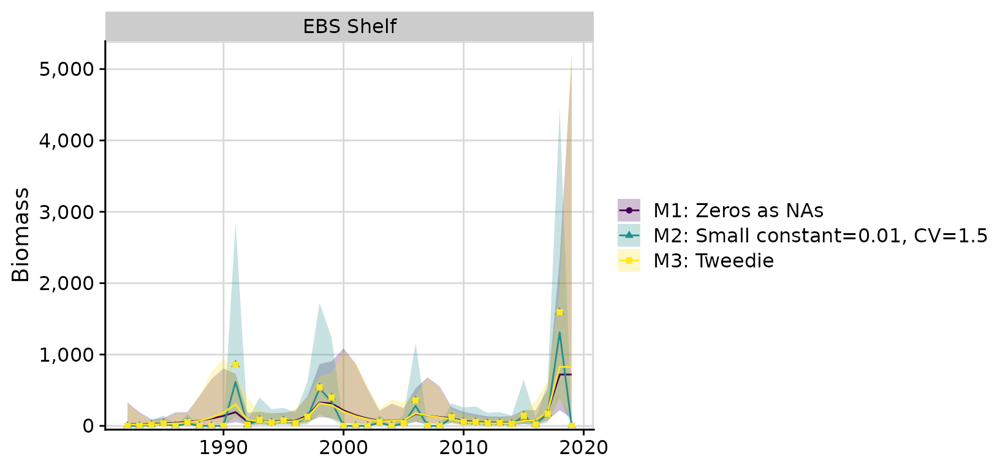

library(rema)
library(ggplot2)
library(dplyr)
library(cowplot) # install.packages('cowplot') # helpful plotting utilities
library(knitr)
ggplot2::theme_set(cowplot::theme_cowplot(font_size = 14) +
cowplot::background_grid() +
cowplot::panel_border())A zero biomass observation occurs when a species is not detected in a survey strata, resulting in an estimated biomass equal to zero and no estimate of variance. These zeros are problematic in the REMA model because biomass is estimated in log-space, and therefore cannot handle zeros. Currently, the default method in REMA is to treat zeros as NAs, or missing values. The REMA package contains alternative methods that allow easy exploration of zero assumptions, including an option to add a user-defined constant (default small constant = 0.0001) and manually define a CV for the zero values (default CV = 1.5).
Here we compare these alternatives with a third, experimental method, using the Tweedie distribution to model observation errors. The Tweedie distribution is a positive, continuous distribution that accepts zeros and is therefore an ideal candidate for situations with zero biomass observations. The tradeoffs of this situation is that it requires the estimation of another parameter (the power parameter ), is computationally expensive, and at least in trial runs, appears to suffer from convergence issues.
The following example uses BSAI non-shortspine thornyhead (non-SST) other rockfish in the EBS shelf bottom trawl survey. The time series of biomass has 13 zeros out of 38 total observations.
| strata | year | biomass | cv |
|---|---|---|---|
| EBS Shelf | 1982 | 0.00 | NA |
| EBS Shelf | 1983 | 0.00 | NA |
| EBS Shelf | 1984 | 17.75 | 1.0001177 |
| EBS Shelf | 1985 | 36.17 | 0.9999791 |
| EBS Shelf | 1986 | 0.00 | NA |
| EBS Shelf | 1987 | 49.72 | 0.9999973 |
| EBS Shelf | 1988 | 0.00 | NA |
| EBS Shelf | 1989 | 0.00 | NA |
| EBS Shelf | 1990 | 0.00 | NA |
| EBS Shelf | 1991 | 857.40 | 0.9427366 |
| EBS Shelf | 1992 | 13.75 | 0.9996411 |
| EBS Shelf | 1993 | 86.07 | 1.0000160 |
| EBS Shelf | 1994 | 46.61 | 0.9999849 |
| EBS Shelf | 1995 | 75.58 | 0.7025223 |
| EBS Shelf | 1996 | 35.63 | 0.9999759 |
| EBS Shelf | 1997 | 126.24 | 0.9999773 |
| EBS Shelf | 1998 | 537.59 | 0.6792890 |
| EBS Shelf | 1999 | 397.58 | 0.7501752 |
| EBS Shelf | 2000 | 0.00 | NA |
| EBS Shelf | 2001 | 0.00 | NA |
| EBS Shelf | 2002 | 0.00 | NA |
| EBS Shelf | 2003 | 55.35 | 0.6986692 |
| EBS Shelf | 2004 | 0.00 | NA |
| EBS Shelf | 2005 | 36.32 | 1.0000123 |
| EBS Shelf | 2006 | 356.64 | 0.8470749 |
| EBS Shelf | 2007 | 0.00 | NA |
| EBS Shelf | 2008 | 0.00 | NA |
| EBS Shelf | 2009 | 121.56 | 0.5781683 |
| EBS Shelf | 2010 | 56.95 | 0.9201803 |
| EBS Shelf | 2011 | 55.82 | 1.0000285 |
| EBS Shelf | 2012 | 36.63 | 1.0000276 |
| EBS Shelf | 2013 | 39.73 | 1.0001188 |
| EBS Shelf | 2014 | 28.25 | 0.9999542 |
| EBS Shelf | 2015 | 142.91 | 0.9999827 |
| EBS Shelf | 2016 | 20.06 | 0.9997865 |
| EBS Shelf | 2017 | 169.32 | 0.7267037 |
| EBS Shelf | 2018 | 1592.69 | 0.6999401 |
| EBS Shelf | 2019 | 0.00 | NA |
Model 1: Zeros as NAs
nonsst <- read.csv('ebsshelf_orox_biomass.csv')
input1 <- prepare_rema_input(model_name = 'M1: Zeros as NAs',
biomass_dat = nonsst,
zeros = list(assumption = 'NA'))
m1 <- fit_rema(input1)
#> Model runtime: 0.1 seconds
#> stats::nlminb thinks the model has converged: mod$opt$convergence == 0
#> Maximum gradient component: 4.23e-10
#> Max gradient parameter: log_PE
#> TMB:sdreport() was performed successfully for this modelModel 2: Add a small constant
input2 <- prepare_rema_input(model_name = 'M2: Small constant=0.01, CV=1.5',
biomass_dat = nonsst,
zeros = list(assumption = 'small_constant',
# values: 1) small constant, 2) assumed CV
options_small_constant = c(0.01, 1.5)))
m2 <- fit_rema(input2)
#> Model runtime: 0.1 seconds
#> stats::nlminb thinks the model has converged: mod$opt$convergence == 0
#> Maximum gradient component: 1.33e-07
#> Max gradient parameter: log_PE
#> TMB:sdreport() was performed successfully for this modelModel 3: Tweedie distribution
input3 <- prepare_rema_input(model_name = 'M3: Tweedie',
biomass_dat = nonsst,
zeros = list(assumption = 'tweedie'))
m3 <- fit_rema(input3)
#> Model runtime: 0.1 seconds
#> stats::nlminb thinks the model has converged: mod$opt$convergence == 0
#> Maximum gradient component: 1.72e-10
#> Max gradient parameter: log_PE
#> TMB:sdreport() was performed successfully for this modelCompare model results
compare <- compare_rema_models(rema_models = list(m1, m2, m3))
compare$plots$biomass_by_strata
Models 1 (Zeros as NAs) and 3 (Tweedie) have the most similar results. While the Tweedie appears to perform well in this case, it can be very slow to run and suffer from convergence issues, especially when observation errors are relatively small. The Tweedie alternative should be considered experimental until these issues can be resolved.